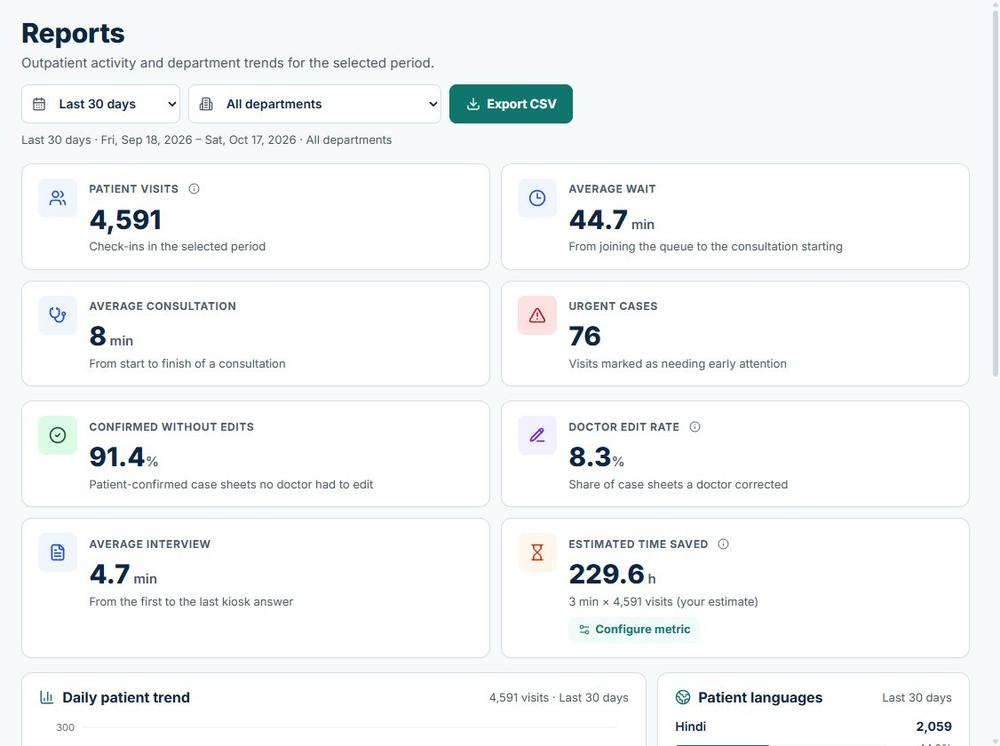
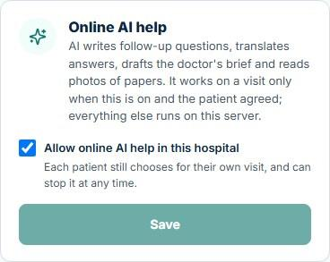
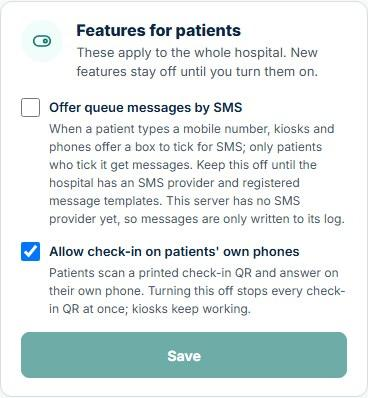
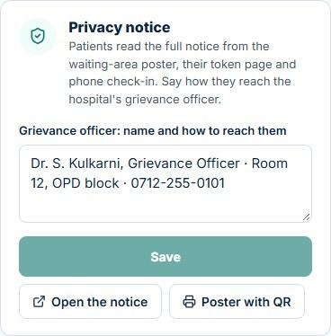

Feature guide for the team · Patient history-taking and queue software
OPD Saathi
A multilingual check-in kiosk, phone check-in and live queue for crowded government OPDs: the patient's history is ready, in English, before they reach the doctor.
What the system is, everything it does, how each part works and what it improves, what it cannot do, and how it is built. Everything added since the last guide (11 October) is marked New. Screenshots come from the application with fictional patients.
Hindi · Marathi · EnglishKiosk or the patient's own phoneLive queue + QR statusFair, explainable triageOPD card for returning patientsAI drafts with sources, never factOld papers read as draftsDoctor's own notesTwo-step sign-in · audit logHTTPS · backups · alertsHistory only — no diagnosis
Updated 25 October 2026 for version 0.7 with Phase 7 G3 (the main branch). Replaces the 32-page guide of 11 October; installation, commands and the demo script now live in docs/DEPLOYMENT.md and docs/DEMO.md. Synthetic data only.
Start here
The system on one page
Government OPDs see hundreds of patients a morning. Patients speak different languages, describe problems in their own words and wait without knowing their turn; doctors get a few minutes each and spend much of it collecting basic history.
What OPD Saathi does
Collects the patient's history before the consultation, in their language, at a kiosk or on their own phone.
Spots danger signs first and gives every patient a fair, explained place in the queue.
Gives the doctor an English case sheet with the patient's own words, earlier visits and old test reports beside it.
Shows staff a live queue and patients a live status page on their phone.
Gives administrators reports, an audit log and control of staff, kiosks, departments and features.
What it deliberately does not do
It never diagnoses, names a disease, suggests a medicine or dose, or checks drug interactions.
AI only drafts and double-checks: every AI line is labelled, cites the patient's answers and is accepted or rejected by a doctor. AI can raise caution, never lower it.
Patients never see a score; staff stay responsible for who is seen first.
Clinical wording and translations are drafts until clinicians and native speakers sign them off.
One patient's journey
Check-inKiosk or own phone: language, consent, danger signs, 8–15 questions
→
Token + QRDepartment, place in line, OPD card for next time
Chooses Hindi, Marathi or English; agrees; says who is answering; gives age and sex; links an OPD card if they have one; flags danger signs; answers by tapping, speaking or typing; adds photos of old papers; confirms the read-back; gets a token, QR and OPD card.
Patient's phone
QR on the token → /s/…
Live place in line, wait range and progress in their language; can stop AI help or SMS; reads the privacy notice. No app, no login.
Nurse
Queue, Patients
Watches the queue and alerts, calls and recalls patients, confirms danger signs and departments, links returning patients, re-issues lost OPD cards, registers patients who need help.
Doctor
Queue, Consultations
Calls the next patient, checks the AI draft against its sources, reads earlier visits and old papers, corrects the history, writes their own notes, prints the PDF.
Administrator
Reports, Settings, Audit log New, System New
Runs staff accounts (with two-step sign-in), kiosks and phone-check-in QRs, departments and hospital-wide switches; reads reports and the audit log; checks the installation's health.
Hospital ITNew
The server, alert e-mails
Installs with one command, keeps HTTPS, backups and updates running, and acts on alerts. Guide: docs/DEPLOYMENT.md.
3
languages everywhere
Kiosk, phone, status page, staff screens, notices and printed forms in Hindi, Marathi and English.
8
staff pages
Queue, Consultations, Patients, Reports, Settings, Audit log, System and My account, each shown only to the roles that need it.
0
diagnoses
History-taking and the queue only, on every screen, in every output and in every AI answer.
Since the last guide (11 October)
What is new, and what it improves
Two big steps: the IIT Bombay readiness work (returning patients, phone check-in, old papers, AI that cites its sources) and Phase 7, production readiness (security, operations and the G3 features). Each item is explained on the pages that follow.
Patients
Phone check-in from a QR poster — no queue at the kiosk; same interview and safety rules.
OPD card (number + PIN) to link today's visit to earlier ones — the doctor sees the history; a shared phone never mixes people up.
Online AI help asked separately, refusable and stoppable — the patient decides; the visit works fully without it.
Who is answering (patient, parent or guardian, helper) — the doctor knows when the history is second-hand.
Photos of old papers at check-in — earlier reports reach the doctor.
Review of systems and Ayurveda history, each switched on per hospital — fuller histories, AYUSH OPDs.
SMS only by the patient's own tick; privacy notice in three languages — consent and rights made real.
Nurses
Missed calls: a grace period, recall with the same token and place, "no-show" only after a miss — fair to a patient who stepped out.
One patient per doctor; two doctors pressing "Call next" together get different patients — no double calls.
"Nurse to confirm" on a self-reported danger sign, Phone badge, "Called by …" — clear responsibility.
Find and link a returning patient without their card; re-issue a lost card — no duplicate records.
Queue board fully in Hindi and Marathi, usable with the keyboard alone — accessibility.
Doctors
AI draft that cites its sources, accepted, edited or rejected by the doctor — AI checked, never taken as fact.
Previous visits tab — what the patient reported before, with dates.
Old papers: the photo beside what AI read, flagged only against the range printed on that paper; results over time across visits.
Doctor's own notes (findings, assessment, plan, follow-up), versioned and printed — a complete visit record.
Visit timeline; one click less from queue to case sheet; FHIR R4 export — accountability, speed, integration.
Administrators
Staff accounts: reset passwords, unlock, edit, sign out everywhere; My account for everyone.
Two-step sign-in (authenticator app), required for administrators — a stolen password is not enough.
Audit log screen and System page — "who saw my record?" and "is everything working?" answered on screen.
Hospital switches: online AI, SMS, phone check-in, Ayurveda, review of systems, call grace period — each hospital decides.
Printables: staff cards, patient signs, privacy poster, paper fallback forms.
Hospital IT
One-command Linux install with HTTPS, secrets as files and hardened containers.
Backups to the minute, encrypted, with a restore drill; alerts to a person by e-mail.
Signed releases, a tested upgrade path and 180-day logs without patient data.
Quality
1,088 API tests, 155 browser tests (ten clean runs in a row) and browser tests against the real API.
Nightly load, upgrade and failure drills; security scans on every change.
Measured on a million visits: the busy screens stay fast.
1 · Patients
Check-in, step by step
A touch-screen kiosk (any tablet or PC with Chrome or Edge) or the patient's own phone. Six steps are shown at the top of every screen: Agree → Details → Safety check → Questions → Review → Token.
Language and consent. The care notice is read aloud; nothing is collected before the patient agrees, and "No, I need staff help" is always offered. New The patient says who is answering: themselves, a parent or guardian, or someone helping; for a child the details screen asks again and needs a choice.
NewOnline AI help is a separate question with both answers styled alike. "Yes" lets Gemini and Sarvam transcribe voice, translate, read photos and draft for the doctor (the phone number is never sent). "No" keeps the whole visit on the hospital's server — tapping, typing, recorded voice prompts and a rule-based case sheet — and the server enforces it.
Details. Age and sex only; a phone number is optional and encrypted. New The SMS box is never pre-ticked and appears only when the hospital has switched SMS on.
NewReturning patients type the OPD number and PIN from their last slip. Today's age and sex must fit the record; wrong tries are limited and audited; the shared kiosk never shows what an earlier visit was about. They say whether today is a follow-up or a new problem.
Safety check first. Six large danger-sign tiles (chest discomfort, breathing, bleeding, fainting, sudden weakness, seizure) come before any question; one tap makes the visit urgent and alerts every staff board within a second.
Questions (8–15) that follow the complaint, by tap, voice or typing. New "Don't know" and "Prefer not to say" stay open questions, never a "no"; operations and personal history are asked; with AI consent, up to three AI follow-ups are labelled for the doctor; an optional review of systems screen and six Ayurveda questions appear when the hospital switches them on.
Review. The history is read back from fixed templates (never by a language model) and any answer can be changed. New The patient can add up to five photos of old papers (prescription, test report, discharge paper), encrypted, read by AI only with consent.
Token. Token, department, place in line and a QR for the phone. New The slip also carries the OPD card (number and PIN). The kiosk clears itself after 60 seconds.
New "Who is answering?" on the consent screen (Marathi): the patient, a parent or guardian, or someone helping.New The separate, optional question about online AI help; both answers look alike.New A returning patient enters the OPD number and PIN from the last slip.The token, the QR for the phone, and the OPD card for next time.
Most answers are one tap, so patients who cannot read or type finish in minutes; the patient controls AI and messages; returning patients bring their history with them, and the doctor learns who gave it.
1 · Patients (continued)
Their own phone, their turn, their rights
New The waiting-hall poster's QR opens check-in on the patient's phone.Live status: people ahead, a wait range, progress, "Stop AI help".New The privacy notice, marked as a draft until counsel approves it.
New Phone check-in from a QR poster
An administrator creates a Phone check-in QR (Settings → Kiosks) and prints it for the waiting hall. Patients scan it and answer the same interview, with the same consent, safety rules and token. Staff see a Phone badge. A reload or lost Wi-Fi resumes the same question; "Replace QR" retires old posters at once; limits stop abuse (6 check-ins per phone and 150 per poster in 10 minutes); the hospital can switch phone check-in off.
The live status page
The QR on the token opens a page with the token, people ahead, a five-minute wait range (never a falsely precise time) and Waiting → Called → With doctor → Done. The phone vibrates when called. New After a missed call it says "go to the desk; your token is kept"; it can stop AI help or SMS (never start them), and links to the privacy notice. No name or health details appear.
New Privacy notice and grievance officer
The full notice (what is collected, why, who sees it, how long it is kept, the patient's rights, where to complain) in all three languages at /privacy/<hospital>, linked from the token page and phone check-in, with the hospital's grievance officer and a printable poster with a QR. It says plainly that it is a draft until counsel approves it.
Comfort, safety and never stopping
Voice guidance, high contrast, buttons of at least 64 px; Call staff on every screen (limited, so it cannot be spammed).
An idle kiosk warns, then resets, so nobody sees another patient's answers.
If the network drops, an offline short form is encrypted on the kiosk and sent later, once only.
New If the server is down, the printed paper fallback pack (forms in three languages, a token roll) keeps the OPD going.
SMS and WhatsApp messages (token, then 5, 2 and 0 people ahead) are built but stay off per hospital until it has a provider contract and registered message templates (DLT). Only a patient's own tick asks for them, and they can be stopped from the status page.
Patients can wait anywhere instead of crowding the door, check in without a kiosk queue, and see — in their own language — what happens to their information and how to complain.
2 · Nurses
The live queue
General Medicine: counters, three kinds of alert, the missed-calls panel and patients in calling order, with "Nurse to confirm", the Phone badge, "Called by" and a countdown before "Mark absent".
Live and reliable
Changes reach every board within a second; a 5,000-patient list applies an urgent change in under 100 ms.
A board whose sign-in ends is closed by the server; yesterday's open visits close themselves after midnight.
What is on the board
Counters (waiting, called, in consultation, urgent) that filter; department, status and search filters.
Alerts, newest first, each with Acknowledge: Urgent danger sign or red flag, Help requested, and Priority "AI suggests… please confirm", always quoting the patient. Unacknowledged urgent alerts sound again every 60 seconds.
Patients in calling order: token, age and sex, complaint in English, priority with score and Why?, waiting time, status.
Next to call with a one-click Call next.
New Calling, fairly and safely
One patient per doctor: a doctor's call reserves the patient; two doctors pressing Call next together get two different patients.
Missed calls: "Mark absent" unlocks after the hospital's grace period (3 minutes by default, counted down). The patient keeps token, urgency and arrival time; Recall puts them back in place; Put back undoes a wrong call; No-show only after a miss.
Nurse to confirm stays on a self-reported danger sign until a nurse has seen the patient.
Department and priority changes need a written reason; every action is checked against the person's department.
Board in Hindi and Marathi; alerts and Call next work with Tab and Enter alone.
The sickest patients surface in seconds; a patient who stepped out is not punished; two doctors never call the same person; and every call, absence and override says who did it.
2 · Nurses (continued)
How the fair queue works
"Why?" lists every point of a 41/100 Priority score, the head start it gave, and the AI check. Patients never see this.
The score (0–100), staff only
Points come from objective signs: an urgent red flag or danger tile 70, a priority flag 30, warning answers up to 25, vulnerability (infant +20, aged 75+ +12, pregnant +12), started today +6.
The patient's own 0–10 rating adds at most 4 — typing "10" cannot jump the queue.
Routine under 30 · Priority 30+ · Urgent 70+ or any urgent red flag.
The calling order
Urgent patients go first. Everyone else keeps arrival order with a head start of 0.6 minutes per point, never more than 45 — so nobody waits for ever.
AI is a checker, not a decider: it may raise a "please confirm" alert, never lowers urgency, and alone counts as Priority at most.
Weights and the 15 red-flag rules are readable files marked "draft — needs clinician review".
The Patients page: every visit, and help at the desk
Register
Every visit for today, 7 or 30 days, with status tiles, filters, search and "Open case sheet" — found in milliseconds even with years of visits.
Assisted registration
A nurse checks in a patient who cannot use the kiosk; consent is still shown first and recorded as given at the desk, then the same interview, rules and queue follow.
New Returning patients at the desk
Search by OPD number or phone (results show number, age, sex and visit count — no names or clinical details), confirm in person, then link. A lost card is re-issued with a new PIN; the number and records stay and the old PIN stops working.
Anyone can ask "why was that person called before me?" and get a line-by-line answer; nobody is left out because they cannot use the kiosk or forgot their card.
3 · Doctors
The case sheet, with its sources
Left: today's patients. Right: one patient in tabs — Overview · Patient history · Previous visits · Old papers · Ayurveda · Interview transcript · Clinical notes — so urgent warnings and the AI draft to check come first and the details are one click away.
Each sentence of the AI summary carries chips for the answers it rests on; here the doctor has accepted it.
Header
Token, age and sex, department, language, case-sheet version, status, priority with Why?, and one main action that follows the visit (Call → Start → Finish), plus PDF. New "Answered by a parent or guardian" when someone else gave the history. "Confirmed by patient" never counts as staff checking the AI.
New The AI draft: a sentence, its sources, a decision
The model writes the brief as sentences that each cite the questions they rest on; the server drops any sentence citing nothing the patient was asked, and the output guard checks every one.
A chip opens that answer in the transcript, highlighted; "Compare with original answers" does the same for the whole brief.
The doctor records Accept, Edit (their words; the AI wording is kept for the record) or Reject — versioned and audited. The PDF names the reviewer and never prints a rejected draft. If the patient stops AI help, the draft disappears.
Patient history and the transcript
Every field shows the English text, the patient's own words and how they gave it (tap, voice with confidence, typed). Edits create versions marked Staff-verified; two people editing at once cannot overwrite each other. The transcript of every question and answer cannot be changed.
New Previous visits of a patient linked by her OPD card: a follow-up of 26 September, with what she reported earlier.
New Previous visits
Up to 20 earlier visits at the same hospital: date, department, complaint, red flags and the reviewed AI brief, plus allergies, medicines and conditions with the date each was last reported — labelled "patient-reported, confirm today". Doctors and nurses see it only while the patient is under their department's care today.
New Visit timeline
Every change to the visit, who made it and when: token issued, called, marked absent, recalled, consultation started. The application can add lines but never change or delete them.
The doctor starts with a checked summary instead of a blank page, sees exactly which answer each AI sentence came from, and knows the patient's past without asking again.
3 · Doctors (continued)
Old papers, results over time and the doctor's own notes
New A test report beside what AI read from it, accepted by the doctor; each result compared only with the range printed on that paper.
New Old papers
Photos from the kiosk, and up to 10 a visit added by staff, newest first by the date printed on them; earlier visits' papers while the patient is under care.
With AI consent, each paper gets a reading: source, diagnoses and medicines as written, results with value, unit and the printed range.
"Below / Within / Above the printed range" is plain arithmetic against that paper's own range, plus the lab's own high/low mark — never a general range, never the model's opinion.
The doctor marks Matches the photo or Does not match. Without AI consent the photo is kept unread. Every view of a photo is audited.
New Haemoglobin across three visits' reports, oldest first; a paper still awaiting a decision is counted, not shown.
New Results over time
Only readings a doctor accepted, from this and earlier visits, one table per test, each result next to the range printed on its own paper. A trend that would take minutes to find in a pile of papers is one glance.
New FHIR export
A visit can be exported as a FHIR R4 bundle (patient, encounter, complaint and conditions as unconfirmed, allergies, medicines as stated, accepted results, the interview, consents and who answered) through the API, for connecting to a hospital system. It is marked "not ABDM-certified".
New Clinical notes: the doctor's own findings, assessment, plan and follow-up date; each save is a version.
New The doctor's own notes
Examination findings, assessment, plan and a follow-up date, written by the doctor and never by AI.
Each save is a new version; earlier ones stay readable; a save that does not start from the latest version is refused, so two doctors cannot overwrite each other.
The latest version is printed on the case-sheet PDF.
PDF and speed
PDF / Print always gives the full history-only case sheet in three scripts, with the reviewed AI summary, open questions and Ayurveda findings. A whole visit — call, start, accept the draft, write notes, finish, print — takes 6 clicks and one key.
4 · Administrators
Reports and Settings

Reports for 30 days of the demo hospital: eight cards, the daily trend, languages and department load.
Reports
For today, 7, 30 or 90 days and any department: patient visits, average wait, average consultation, urgent cases, confirmed without edits (how accurate the kiosk history is), doctor edit rate, average interview, and an estimated time saved (clearly labelled, with the minutes per visit set by the administrator). Daily trend, languages, department load and a CSV export protected against spreadsheet formulas. Every view is audited.
Users
Create doctors, nurses and administrators; deactivate or delete (history stays).
NewEdit a person or their department, reset a password (they choose a new one at first sign-in), unlock an account, sign a person out everywhere.
NewTwo-step sign-in with an authenticator app: required for administrators, available to doctors and nurses, with ten single-use recovery codes.
NewMy account: change your password, see and end your own sign-ins.
Kiosks and phone check-in QRs
Register a kiosk → a one-time activation code (24 hours) with Copy setup link; the kiosk then signs itself in and reports Online / Offline / Not seen yet / Turned off. A replaced device gets a new code for the same record. New Phone check-in QRs to print and replace; New kiosk secrets renew themselves every 30 days.
Departments and hospital-wide switches
Code, token prefix (MED → MED-016) and names in three languages; deactivate or delete safely. New The call grace period, the Ayurveda and review-of-systems interview modules, online AI help, SMS messages and phone check-in — each switched for the whole hospital and audited; risky features ship switched off.

New The hospital's AI switch; it says when the server has no AI.

New SMS (off until a provider exists) and phone check-in.

New Grievance officer, the notice and its QR poster.
4 · Administrators (continued)
The audit log and the System page
New Audit log: a visit's trail, from the patient's consent to the doctor's notes.
New The Audit log page
Every sign-in (success, failure, lockout, two-step), every view of a case sheet, history, photo or report, and every change to a visit, the queue, consent, settings, accounts and kiosks — with who, when and which record, never answers, names or phone numbers. The application cannot change or delete entries.
Search by record, person, action and dates; export CSV for an investigation file.
Reading and exporting the log are themselves recorded.
Answers a patient's "who saw my record?" in one search (see docs/runbooks/audit-investigation.md).
New System: one look at the installation's health.
New The System page
The version; whether the database, the queue store and the background worker answer; the last backup; free disk; days left on the HTTPS certificate; how AI, voice and SMS are set up; and each kiosk's last check-in. The same problems are also e-mailed to hospital IT as alerts.
New Ready to print (docs/print, docs/paper)
One-page cards for nurses, doctors and administrators in three languages, using the screens' own words.
Patient signs "How to check in" and "If you feel very unwell, tell the staff now"; the privacy notice poster.
The paper fallback pack: intake forms with the kiosk's own questions, a token roll and a kiosk sign.
Administrators run the hospital from screens, not commands: accounts, switches, investigations and health checks are all one page away.
5 · Hospital IT New
Running it in a hospital
Phase 7 turned a demo into something a hospital's IT can run: one server per hospital, inside its network, over HTTPS, with backups, alerts and safe upgrades. Step by step: docs/DEPLOYMENT.md; every failure has a runbook in docs/runbooks/.
Install in one command
sudo ./scripts/setup-hospital.sh on a Linux server (Windows Server: a Hyper-V Linux VM): secrets as files, HTTPS only, hardened non-root containers, starts at boot; it ends with a check of the installation.
Each hospital has its own database, keys and administrator; several hospitals on one server stay separated by the database itself.
start-demo.ps1 is for demonstrations only, never for a hospital.
Backups that restore to the minute
pgBackRest archives every change within 5 minutes and takes an encrypted backup every night, optionally copied off-site.
A restore drill proves the backups on every change in CI; keys are escrowed in two places and can be rotated.
Alerts that reach a person
Prometheus and Alertmanager with 19 tested rules: server, database, queue store or worker down, errors, slow responses, disk, missing backup, certificate expiry, a silent kiosk, an urgent patient alert waiting over 5 minutes.
Sent by e-mail (and Telegram if wanted); the System page shows the same state.
Safe upgrades and known failures
Signed, scanned images with a list of their components, and an offline bundle for slow internet.
Upgrades run outside OPD hours with an automatic backup; the upgrade from the previous release is tested in CI.
Failure drills every night: Redis, PostgreSQL and the worker stopped, the disk filled — each shows its known state, raises its alert and recovers.
Logs kept 180 days (CERT-In), with a test that no patient data reaches them.
How big a hospital?
Tested on a GitHub runner (4 vCPU, 16 GB) at a district hospital's peak: 300 check-ins an hour, 20 staff boards, 200 status pages and 8 doctors for 15 minutes — 18,102 requests, 0.02% failed, no token issued twice, every step's 95th percentile under a second. A scratch database with a million visits showed the screens staff keep open stay fast (the busiest queries under 11 ms after five indexes were added). Capacity per hospital size is confirmed on staging hardware before a pilot.
A hospital gets a system its IT can install, back up, monitor and upgrade without the development team in the room — and that keeps working, or fails safely, when parts of it stop.
6 · AI
AI as an assistant, and life without it
AI needs three yeses: the server has a key, the hospital has switched it on New, and the patient agreed New. Without any of them, every core feature still works on the hospital's server.
Feature
With AI (Gemini; Sarvam for Indian voices)
Without AI, or when the patient says no
English case sheet
Free text translated; a short doctor's brief whose every sentence cites its answers, for the doctor to accept, edit or reject New
Tapped answers translated from the bilingual question bank; free text stays in the patient's words
Questions
Up to three follow-ups written for this complaint, in three languages, labelled "AI follow-up"
The fixed, logical question flow
Voice
Server speech recognition (Sarvam, then Gemini) and natural voices
Recorded question audio and the device's own voice; tapping and typing
Old papersNew
Each photo read as a draft for the doctor to compare
The photo is kept unread for the doctor to read
Safety
Rules, plus an AI second opinion that can only raise urgency and must quote the patient
The rules engine (15 draft rules) and danger tiles
Routing, queue, tokens, reports
Always rule-based and the same with or without AI
Guard-rails on every AI answer
An output guard rejects text that diagnoses, advises treatment, names doses or contains links (100 of 100 adversarial prompts blocked in testing).
AI red flags must quote what the patient said; AI never lowers urgency.
Drafts are labelled until a doctor reviews them; a rejected draft is never printed.
If an AI service is slow or down, the kiosk quietly continues with the question bank.
Why this design
A hospital can start with no AI cost and no data leaving the building, and switch AI on only when its contract and its patients allow. Safety never depends on AI being right: rules decide, AI only adds caution, people confirm. New A patient who said yes can withdraw from their own phone; from then on nothing more about the visit goes to AI services.
7 · Trust
Safety, privacy and security
Clinical safety
History only — no diagnosis, disease names, medicines or advice anywhere, in any output.
Danger signs first; uncertainty escalates, never lowers urgency; lowering needs a recorded staff decision.
The patient confirms the read-back; doctors correct anything; every change is versioned.
Red-flag rules, triage weights and wording are drafts with a hazard log; New production refuses to start with unsigned clinical content when the hospital requires sign-off.
Privacy (DPDP Act 2023)
New Consent by purpose: care (required), online AI help and SMS (optional, each with its own notice, withdrawable).
New A full privacy notice in three languages and a grievance officer.
Names, phones, answers, case sheets, notes and photos encrypted in the database; only age and sex required.
Phone status pages show no personal details; a retention tool removes or pseudonymises old records (its schedule waits for the hospital's approved periods).
Security
Each hospital's rows walled off by the database itself (row-level security), not only by code; least privilege for every service.
New Two-step sign-in, password reset with forced change, sign-out everywhere; Argon2 password hashes; lockout and rate limits.
Kiosks paired with one-time codes; New their secrets and the server's keys can be rotated.
New HTTPS only, strict browser security headers, an append-only audit log with its own screen.
New On every change: image and code scanners (Trivy, Semgrep, Bandit, Gitleaks, dependency audits); nightly attack scans (OWASP ZAP) and API fuzzing; a threat model and an OWASP ASVS Level 2 self-assessment.
Reliability
Every request carries a unique key: a double tap or a retry never creates two visits or two calls.
Two people editing one case sheet or one set of notes cannot overwrite each other.
If the queue store is lost, the queue is rebuilt from the database; the worker survives a Redis outage.
A kiosk that loses the network keeps an encrypted short form; a stopped server falls back to paper.
The penetration test, clinical and legal sign-off still have to happen before real patients (see "What it cannot do, and what is left"). The engineering for them is ready; the decisions belong to people.
8 · Technology
How it is built
Kiosktablet or PC browser
Patient's phonecheck-in QR · status page
Staff browserslaptop, tablet, phone
nginxHTTPS, security headers, rate limits; serves the web app
React web app (PWA)one app for kiosk, phone, status page and staff
Redis ×2live queue and sessions · a separate cache
Prometheus + Alertmanagermetrics, 19 alert rules
Optional AI and voiceGemini · Sarvam
Layer
Technology
Web app
React 19 and TypeScript 5.9, Vite 7, React Router 7, TanStack Query, Zustand, Tailwind CSS 4, i18next (Hindi, Marathi, English), installable PWA with an encrypted offline form, virtualised lists for very long queues
API
Python 3.12, FastAPI, Pydantic, SQLAlchemy (async) with asyncpg, Gunicorn and Uvicorn workers, WebSockets and server-sent events for live updates, WeasyPrint for PDF case sheets, structlog, PyJWT, Argon2, pyotp (two-step sign-in), the Google Gen AI SDK
Data
PostgreSQL 16 with row-level security and Alembic migrations (34 so far); Redis 7 for queue state and a separate cache; ARQ for background jobs; AES-GCM field encryption with rotatable keys
Running it
Docker Compose with a production overlay (TLS in nginx, secrets as files, non-root containers), pgBackRest, Prometheus and Alertmanager; images pinned by digest, signed with cosign, with a component list
Quality gates
GitHub Actions on every change: backend, frontend, production smoke test with browser tests against the real API, image scans and security — all must pass before code reaches main; nightly load (k6), real installation, upgrade, failure drills, OWASP ZAP and Schemathesis
Tests
pytest with Hypothesis, Vitest with a coverage gate, Playwright with axe accessibility scans at seven screen widths and three languages
An ordinary, well-supported open-source stack that a hospital's IT can run on one server, with every decision written down as an ADR in docs/DECISIONS.md.
9 · Evidence
Quality, measured
1,088
API tests
unit and integration on real PostgreSQL and Redis, with migrations up, down and up
155
browser tests
ten full runs in a row with no retry; plus tests against the real API in production mode
137
web unit tests
with a coverage gate that can only go up
Synthetic evaluations
Check
Result
Red flags that must be caught (held-out set)
60 / 60
Negations not falsely flagged ("no chest pain")
50 / 50
Department routing (held-out set)
96 / 96
History extraction with zero invented fields
100 / 100
Adversarial prompts blocked by the AI output guard
100 / 100
Urgency never decreases when a warning sign is added
500 / 500
Golden interviews completed correctly (three languages)
30 / 30
Speed, scale and access
Load at a district hospital's peak: 18,102 requests in 15 minutes, 0.02% failed; 95th percentile: check-in step 29 ms, staff board 16 ms, call next 165 ms, status page 959 ms.
On a million visits: the register, the audit search and the close-out now take 9–12 ms (they were 100–400 ms) after migration 0034; query-count tests stop any screen from running one query per row.
Danger-tile alerts reach staff boards in under a second; a 5,000-patient board applies an urgent change in under 100 ms.
Accessibility: no serious or critical issues in automated scans; Lighthouse accessibility 100 on kiosk and status pages; no sideways scrolling from 320 to 1600 px.
Every night, automatically
A 15-minute load test, a real installation from the setup script, an upgrade from the previous release with a patient and a paired kiosk, failure drills, attack scans and API fuzzing.
These are synthetic tests: they prove the software behaves as designed, not clinical accuracy. Clinician and native-speaker review is still required.
10 · Honest status
What it cannot do, and what is left
Boundaries on purpose
No diagnosis, disease names, medicines, doses or drug-interaction checks (ADR 015).
It knows only what the patient said: the history is their own account, translated, not verified.
Patients see their place in the queue, not their records (a printed PIN is not strong enough sign-in; ADR 014).
One server per hospital, inside its network; not built to face the internet, no Kubernetes.
Not done yet, and what would change it
SMS / WhatsApp are built but need a provider contract and DLT templates.
More languages need the question bank, screens, notices and voices translated and reviewed.
ABDM / ABHA and the hospital's own system: a FHIR export exists; ABDM certification is months of outside process.
Voice in a crowded OPD may need a handset; screen readers are checked by scans, not yet with TalkBack and NVDA users.
The reports summary recounts all history every 5 minutes; it needs a per-day count before a busy hospital passes about 250,000 visits.
Before real patients — owned by people, not code
Item
Who
Penetration test closed
An outside security auditor
Clinical sign-off of questions, rules, weights and wording; native-speaker review of Hindi and Marathi (including everything added in Phase 7 and the privacy notice)
Clinicians and language reviewers
Patient notice, consent texts, processor and AI/SMS contracts, retention schedule, breach procedure signed
The hospital's counsel and DPO
Usability test with real staff and patients, severe issues fixed; kiosk placement
The team with the pilot hospital
Real phones and tablets over HTTPS on the hospital's network
The team with hospital IT
Staff training; the operator guide used by someone outside the team; signs printed
The hospital and the team
Staging and standby servers
The hospital (hardware)
Then a pilot in one OPD department and version 1.0. OPD Saathi 0.x is for pilots with synthetic data and staging. Full list: docs/LIMITATIONS.md, the go-live checklist in docs/GO_LIVE_CHECKLIST.md.
11 · Reference
Words used in the app, and where to read more
Term
Meaning
Token
The patient's number for the day: department prefix and counter (MED-016 = 16th General Medicine patient today).
OPD cardNew
OPD number (for example 26-000123) and a six-digit PIN on the token slip; links the next visit to this one. The PIN is never stored.
Danger tile / red flag
A danger tile is one of six safety buttons on the kiosk; a red flag is a warning raised by a safety rule (or an AI second opinion) from what the patient said. Neither is a diagnosis.
Triage score, head start
A 0–100, staff-only score; each point places the patient 0.6 minutes earlier than their arrival, at most 45 minutes. Urgent patients go first.
Grace period, recallNew
The minutes after a call before staff may mark a patient absent; a recall puts them back on their original arrival time.
AI draft, sourcesNew
The AI's summary for the doctor, each sentence linked to the answers it rests on; the doctor accepts, edits or rejects it.
Printed rangeNew
The normal range printed beside a result on the patient's own paper — the only range results are compared with.
Consent purposeNew
Care (required), online AI help and SMS (optional), each with its own notice and record, each withdrawable.
Case sheet, transcript
The organised English history for the doctor, and the unchangeable record of every question and answer.
Activation code, check-in QR
A one-time, 24-hour code that pairs a kiosk device; a printed QR that opens phone check-in and can be replaced at any time.
Row-level security
A database feature that makes each hospital's rows invisible to every other hospital.
Two-step sign-inNew
A password plus a code from an authenticator app (or a single-use recovery code).
FHIRNew
The international standard format for exchanging health records; OPD Saathi exports a visit as a FHIR R4 bundle.
Where to read more
Document
For
docs/OPD_Saathi_Documentation.pdf
The full product and technical reference: every screen, algorithm, table and route
docs/DEPLOYMENT.md, docs/runbooks/
Installing and running OPD Saathi in a hospital; what to do when something fails
What it does not do, the hazard log and the data map
docs/SCALING.md, docs/DECISIONS.md, CHANGELOG.md
Measurements, architecture decisions, and what changed in each release
docs/PHASE_7_PRODUCTION_PLAN.md
The production plan and where every task stands
OPD Saathi collects history for clinical staff. It does not diagnose or recommend treatment. All patients, staff and hospitals shown in this guide are fictional.